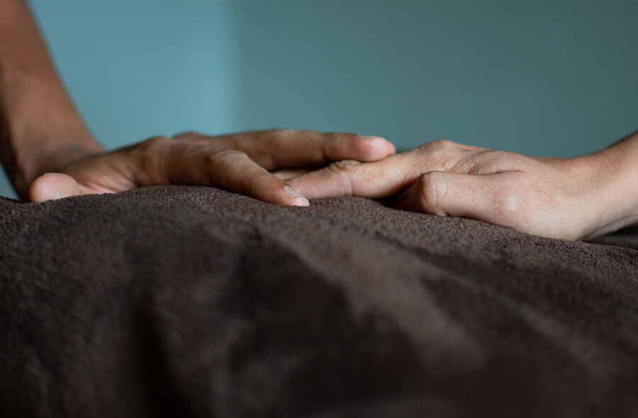
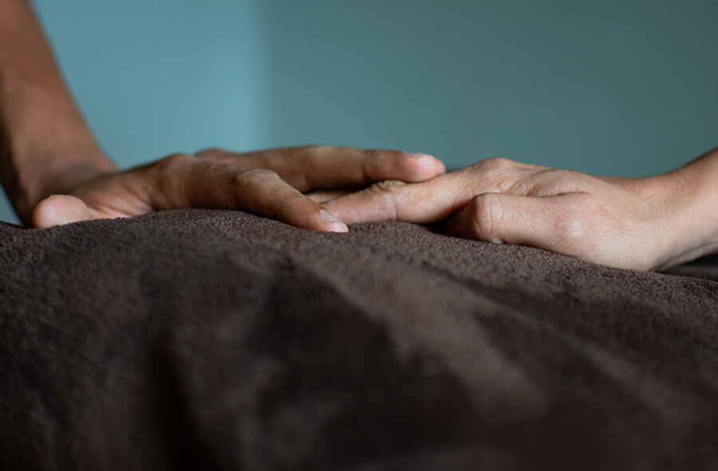

As resources dwindle, violence erupts, and corruption becomes rampant, Venezuelans cope with the reality of leaving their home. They are forced to leave nearly everything behind in search of a safer life. However, some items are held near and dear as families and individuals escape the turmoil that has overridden their country. Venezuelans hold these items close to their heart while they hope for the day that their country will return to peace.

Kiara Antonella Fariñas Rodriguez migrated with her family from Maturín, Venezuela to Medellín in May 2018. Her family had no choice but to leave their home in Venezuela as the country fell deeper into the humanitarian crisis, and her family was unable to purchase basic supplies to take care of her. Kiara lives with eight people, including her mother and father Oneidys Alejandra Rodríguez Fuenmayor and Richard Javier Fariñas Herrera. The stuffed bunny she holds in her hands is one of the few items Kiara brought with her from home.
 

Deylena Barboza and Jonathan Freites came to Medellín in July 2017. In Venezuela, they lived in Miranda, where Deylena was a lawyer and a teacher and Jonathan was a civil engineer. In Colombia, Deylena and Jonathan are unable to continue their careers, so Deylena is taking classes to practice law again and Jonathan works as a fitness trainer. Their most treasured item they brought with them on this journey is the blanket they have in their hands because it gives them a sense of security. When they didn’t know where they were going to move, they felt like this blanket was very important to bring to keep warm. They feel extremely grateful to have made good lives for themselves in Medellín, but never wished to leave their home in Venezuela.
Maríangel Castillo lives in an apartment in Medellín with her two children and husband. They share this space with another family, but don’t mind it. Her husband came to Colombia before her, then she came for a few months before returning to Venezuela to give birth to her baby. She remained in Venezuela for one month then returned to Medellín. She holds in her hands a religious idol she brought as a way of remembering her family. It is a strong cultural piece from her home in Venezuela and each member of her family has one.

Andrea Blanco Rondón sits on her bed with her children Lillian, Elisa and Andres. Andrea’s family came to Colombia from about two years ago when they were unable to buy basic necessities for their children. Before Medellín, they went to Cúcuta and sold candies and guava snacks. After a year, they saved money for bus tickets and came to Medellín. They live in the neighborhood Santo Domingo, a cable car’s ride away from the center of Medellín. The family feels grateful to be together and healthy in Colombia. Andrea brought a photograph of her grandmother.

Jedrileth Carolina Gonzalez Roa and her boyfriend John Jairo Blandón Mejías sit together in their home in Medellín. Here they share a household with six other friends and family members, including Kiara, Jedrileth’s niece. They came to Colombia because they couldn’t face the situation in Venezuela anymore. “The situation is really dangerous. You go out of your house and you don’t know if you’ll come back. I’ll do anything to bring my family here,” Jedrileth said. In Caracas, she bought cups for her whole family, each with a special quote inside. The cups she and John hold in their hands are important because they remind her of her family and the good moments they had.

Ayerim Galue and her daughter sit together at a mall in Medellín where her husband works. Her family came here in October 2018 for their two-year-old daughter Rebecca. During the recent rolling blackouts, Ayerim has been unable to eat because she couldn’t talk to her mother in Venezuela and wondered whether she was able to eat. Ayerim brought her grandmother’s dress with her from Venezuela, and especially treasures it as her grandmother raised her and recently passed away.
“My grandmother told me, ‘If I am not there when your baby grows up, just look at this dress and remember me.’ She died before I came here and I cannot be away from this.”

Amalia Tarazona and her husband Juan Carlos sit in the bedroom of their apartment in Medellín. Juan Carlos works as a chef and a musician and often doesn’t finish working until five in the morning. He arrived in Colombia five years ago and Amalia came in 2017. “Even if the situation is fixed, and there were diamonds and gold and whatever back there, I still wouldn’t go there. We had some stuff back there and we had to sell everything,” said Juan Carlos, “but material things aren’t that important, what’s important is that we’re fine.” To continue his occupation of being a chef, Amalia and Juan Carlos brought with them their pepper grinder.
“Material things aren’t that important, what’s important is that we’re fine.”

Elizabeth Tarazona lives with her sister Amalia and her husband Juan Carlos. She arrived in July 2018 with her son, and has three children still in Anzoátegui where she is from. Elizabeth brought next to nothing with her to Medellín, and holds on to her memories as she dreams of returning to Venezuela someday. Though she and her sister are Colombian, they have lived in Venezuela for the last twenty years and consider it their home. “I feel more of a Venezuelan person than a Colombian. I only brought my memories from home and I have three reasons to go back,” Elizabeth said, referring to her children who remain in Venezuela.
“I feel more of a Venezuelan person than a Colombian. I only brought my memories from home and I have three reasons to go back.”
Venezuelans have been traveling across the country to find a better place to live. Over three million Venezuelans have left the country, with many of them staying in neighboring country Colombia. Colombia has taken in over one million Venezuelans, and it is projected by 2021 that nearly 4 million Venezuelans could be living in Colombia. While the financial strain on Colombia has been felt, the government has left the borders fairly open, and Colombians have welcomed their Venezuelan brothers and sisters into the country.